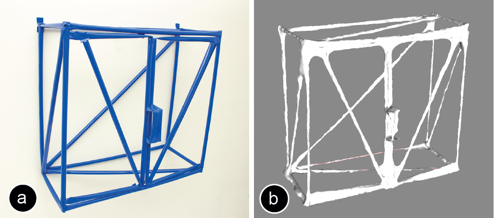
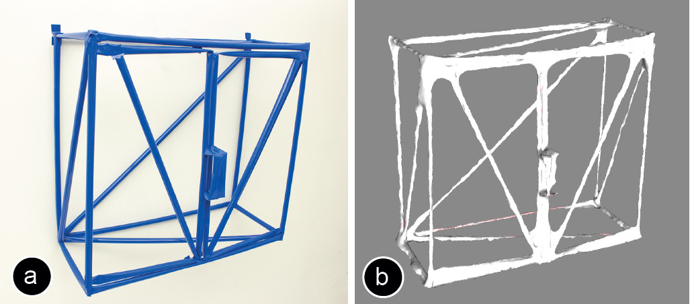

Publication
Agrawal, H., Umapathi, U., Kovacs, R., Frohnhofen, J., Chen, H.T., Mueller, S., Baudisch, P.
Protopiper: Physically Sketching Room-Sized Objects at Actual Scale.
In Proceedings of
UIST ’15
, pp. 427-436.
Demo at UIST'15
DOI
Paper
Video
I worked on this project before joining MIT. Here is the original ProtoPiper project page at Hasso Plattner Institut.
 Press
Video
Slides
Press
Video
Slides


I worked on this project before joining MIT. Here is the original ProtoPiper project page at Hasso Plattner Institut.
1 / 67

2 / 67

3 / 67

4 / 67

5 / 67

6 / 67

7 / 67

8 / 67

9 / 67

10 / 67

11 / 67

12 / 67

13 / 67

14 / 67

15 / 67

16 / 67

17 / 67

18 / 67

19 / 67

20 / 67

21 / 67

22 / 67

23 / 67

24 / 67

25 / 67

26 / 67

27 / 67

28 / 67

29 / 67

30 / 67

31 / 67

32 / 67

33 / 67

34 / 67

35 / 67

36 / 67

37 / 67

38 / 67

39 / 67

40 / 67

41 / 67

42 / 67

43 / 67

44 / 67

45 / 67

46 / 67

47 / 67

48 / 67

49 / 67

50 / 67

51 / 67

52 / 67

53 / 67

54 / 67

55 / 67

56 / 67

57 / 67

58 / 67

59 / 67

60 / 67

61 / 67

62 / 67

63 / 67

64 / 67

65 / 67

66 / 67

67 / 67

Protopiper:
Physically Sketching Room-Sized Objects at Actual Scale
 Figure 1: Protopiper is a hand-held physical sketching device. Unlike smaller devices that extrude plastic, protopiper creates tubes with connectors from adhesive tape. By allowing users to sketch and prototype room-sized objects at actual-scale, users can verify their designs during prototyping. For example, they can make sure that objects fit with the room or their bodies.
Physical sketching of 3D wireframe models using a hand-held plastic extruder allows users to explore the design space of 3D models efficiently. Unfortunately, the scale of these devices limits users’ design explorations to small-scale objects. We present protopiper, a computer aided, hand-held fabrication device that allows users to sketch room-sized objects at actual scale. The key idea behind protopiper is that it forms adhesive tape into tubes as its main building material, rather than extruded plastic or photopolymer lines. Since the resulting tubes are hollow they offer excellent strength-to-weight ratio, and thus scale well to large structures. Since the tape is pre-coated with adhesive it connects into tubes quickly, unlike extruded plastic that would require heating and cooling in the kilowatt range. We demonstrate protopiper’s use through several demo objects, ranging from more constructive objects, such as furniture, to more decorative objects, such as statues. In our exploratory user study, 16 participants created objects based on their own ideas. They rated the device as being “useful for creative exploration”, “its ability to sketch at actual scale helped judge fit”, and “fun to use.”
Protopiper
Figure 1 shows two protopiper users in the process of creat-ing sofa designs, in search of the one style and size that looks best and fits into the surrounding room. Unlike paper, CAD programs, or off-scale sketching tools, protopiper allows them to sketch the sofa at actual scale. This allows them to verify their questions during sketching already. When finished, they use the measurements of their “pro-topipe” to either get a custom sofa made or to find a read-ymade sofa of matching style and dimensions (Figure 1c).
Figure 2 shows a more encompassing example, i.e., the outcome of a longer design session that investigated what furniture and appliances might go best with the new kitch-en. Again, during the design process users can already vali-date their designs, i.e., make sure that everything fits, that overhead cupboards can be reached by all family members, and that remaining spaces do not feel too tight. Sketching at actual scale causes ergonomic mishaps “pop out”, as users naturally use their own bodies as references.
Figure 2: Working at actual scale allows discovering design mishaps (e.g. ergonomic issues) already during prototyping.
The sofa and kitchen examples illustrate how protopiper allows users to construct rectilinear objects, such as furniture. Protopiper, however, works equally well for freeform expression, such as the T-Rex sculpture shown in Figure 3.
Figure 3: A T-Rex sculpture made using protopiper.
Figure 1b show the protopiper device. The key idea behind it is that it forms adhesive tape into tubes as its main build-ing material, rather than extruded plastic or photopolymer lines. Since the resulting tubes are hollow they offer excel-lent strength-to-weight ratio, thus scale well to large struc-tures. Since the tape is pre-coated with adhesive it forms and connects into tubes quickly.
Protopiper’s primary function is to shape adhesive tape into light and sturdy tubes and to provide these tubes with what we call wing connectors—one at each end (Figure 4). Wing connectors connect tubes to flat or curved surfaces, such as walls or ceilings, or other tubes.
Figure 1: Protopiper is a hand-held physical sketching device. Unlike smaller devices that extrude plastic, protopiper creates tubes with connectors from adhesive tape. By allowing users to sketch and prototype room-sized objects at actual-scale, users can verify their designs during prototyping. For example, they can make sure that objects fit with the room or their bodies.
Physical sketching of 3D wireframe models using a hand-held plastic extruder allows users to explore the design space of 3D models efficiently. Unfortunately, the scale of these devices limits users’ design explorations to small-scale objects. We present protopiper, a computer aided, hand-held fabrication device that allows users to sketch room-sized objects at actual scale. The key idea behind protopiper is that it forms adhesive tape into tubes as its main building material, rather than extruded plastic or photopolymer lines. Since the resulting tubes are hollow they offer excellent strength-to-weight ratio, and thus scale well to large structures. Since the tape is pre-coated with adhesive it connects into tubes quickly, unlike extruded plastic that would require heating and cooling in the kilowatt range. We demonstrate protopiper’s use through several demo objects, ranging from more constructive objects, such as furniture, to more decorative objects, such as statues. In our exploratory user study, 16 participants created objects based on their own ideas. They rated the device as being “useful for creative exploration”, “its ability to sketch at actual scale helped judge fit”, and “fun to use.”
Protopiper
Figure 1 shows two protopiper users in the process of creat-ing sofa designs, in search of the one style and size that looks best and fits into the surrounding room. Unlike paper, CAD programs, or off-scale sketching tools, protopiper allows them to sketch the sofa at actual scale. This allows them to verify their questions during sketching already. When finished, they use the measurements of their “pro-topipe” to either get a custom sofa made or to find a read-ymade sofa of matching style and dimensions (Figure 1c).
Figure 2 shows a more encompassing example, i.e., the outcome of a longer design session that investigated what furniture and appliances might go best with the new kitch-en. Again, during the design process users can already vali-date their designs, i.e., make sure that everything fits, that overhead cupboards can be reached by all family members, and that remaining spaces do not feel too tight. Sketching at actual scale causes ergonomic mishaps “pop out”, as users naturally use their own bodies as references.
Figure 2: Working at actual scale allows discovering design mishaps (e.g. ergonomic issues) already during prototyping.
The sofa and kitchen examples illustrate how protopiper allows users to construct rectilinear objects, such as furniture. Protopiper, however, works equally well for freeform expression, such as the T-Rex sculpture shown in Figure 3.
Figure 3: A T-Rex sculpture made using protopiper.
Figure 1b show the protopiper device. The key idea behind it is that it forms adhesive tape into tubes as its main build-ing material, rather than extruded plastic or photopolymer lines. Since the resulting tubes are hollow they offer excel-lent strength-to-weight ratio, thus scale well to large struc-tures. Since the tape is pre-coated with adhesive it forms and connects into tubes quickly.
Protopiper’s primary function is to shape adhesive tape into light and sturdy tubes and to provide these tubes with what we call wing connectors—one at each end (Figure 4). Wing connectors connect tubes to flat or curved surfaces, such as walls or ceilings, or other tubes.
 Figure 4: Protopiper provides tubes with wing connectors, which can connect to: (a) walls, (b) other objects, (c) tubes.
Protopiper’s tubes also afford creating simple mechanisms. By creasing them, for example, users form hinges. Hinges allow for moving mechanisms, like the opening-closing umbrella in Figure 5b/c. We will discuss other connections and mechanisms enabled by protopiper in the “Design Vocabulary” section.
Figure 5: (a) Protopiper allows creating simple mechanisms, such as hinges that allow opening-closing an umbrella (b, c).
Contribution
The key contribution of protopiper is that it allows users to sketch room-size objects at actual scale, allowing them to validate their designs against the physical world during sketching. Our main engineering contribution is the idea to form adhesive tape into tubes as the main building material for physical prototyping—rather than extruding hot plastic.
The concept of physical sketching at large scale works because (1) our hollow tubes provide excellent strength-to-weight ratio, (2) the use of tape pre-coated with adhesive eliminates the need for heating/cooling that a plastic extrusion system would be subject to, (3) the device produces tubes fast enough for real time use, and (4) the device is light enough (approx. 1kg) to be operated free hand.
Protopiper offers a range of useful functionality: (1) The wing connectors allow users to build directly on walls, the ground, and other tubes; (2) hinges etc. allow creating simple mechanisms; and (3) by producing straight, cut-to-length tubes, protopiper allows for reasonably accurate construction, rather than just doodling.
We condensed the feature set to a small set of tools, i.e., measurements to relate to the environment, design elements to support the most common object types, diagonals to obtain structural integrity, and a single connector design. This allowed us to equip protopiper with a simple user interface, which in turn allows users to focus on their current sketch.
While using tubes as a building element has many benefits, there are also two limitations: (1) if users ever accidentally crease a tube, the inside of the tube can stick to itself, which requires manual effort to restore. (2) Since tubes are designed to be straight and stiff, users have to approximate curves as sequences of straight pipes.
Hardware Design of Protopiper
Figure 6 shows a close-up of the protopiper device. It is hand-held and self-contained, allowing users to move around freely.
Figure 6: The hand-held protopiper device.
The device create tubes using the simple “assembly line” shown in Figure 7: it pulls the tape off the roll, shapes it into a tube, seals the tube, “brands” the wing connectors into the tube, and finally cuts the finished tube off.
Figure 7: The protopiper device produces tubes in 5 steps.
Step 1 – pulling the tape off the roll: Pressing the extrude button on the device drives a pair of geared rollers that draw the tape off the roll (Figure 8). The metal surface and rippled texture of the gears prevent the sticky inside of the tape from getting stuck to the gears.
Figure 8: Protopiper’s “extrusion” mechanism. This pair of gears pulls the tape off the roll.
To minimize the required pulling force, we use tape with a backing layer that easily peels off. This backing layer is wound back on a friction-coupled second spool, as shown in Figure 9.
Figure 9: A second spool gathers the tape’s backing layer.
Step 2 – shaping the tape into a tube: the tape is shaped into a tube by the series of guides and stencils shown in Figure 10. First a roller prong pushes the tape down, separating the tape from its backing layer and creasing the tape into a “v” shape. Next the “u” stencil gives the tape a more continuous curvature. Finally, the “e” stencil arranges the tape so that the two edges overlap, preparing it to be sealed into a tube.
Figure 10: A series of stencils shapes the tape into a tube by successively increasing curvature.
Figure 11 shows the stencils in detail. Note the rippled edges on the inside of the stencils—these reduce friction between the stencils and the adhesive tape.
Figure 11: (a) The “u” and (b) “e” stencils that shape the tape into a tube.
Step 3 – sealing the tube: Protopiper now seals the tube by pressing the two overlapping edges together. This function is performed by the same two gears that pull the tape from the roll (Figure 8). Sealing the tape into a tube gives the tube its structural integrity.
Step 4+5 – making the connector and cutting off the tube: Two “branding irons” are heated up by running electricity through the resistive wires (Figure 12a), then a servomotor presses the branding irons into the sides of the tube. A clamp at the end of the cutting mechanism stabilizes the tube while it is being cut (Figure 12b). After finishing the cut, the user can slightly pull on the tube to remove it from the device.
Figure 12: Making connectors: (a) Two “branding irons” heat up, (b) then a servomotor presses them into the tube’s sides.
As illustrated by Figure 13, a single action of this mechanism cuts the pipe, and produces a wing connector at the end of the current pipe and at the beginning of the next pipe.
Alternatively, the device can create a straight cut without wing connectors; protopiper accomplishes this by heating up only the middle wire of the branding mechanism. The cutting wires need to be cleaned from time-to-time and replaced after approximately 300 cuts.
Figure 13: A single cut produces two wing connectors at the same time, one at the end of the completed tube and one at the beginning of the next tube.
As shown in Figure 14, protopiper’s assembly line ends with a square frame. It serves as a folding edge that allows users to efficiently form living hinges on the extruded pipe.
Figure 14: This square frame helps users create hinges.
Tape
We designed our prototype so as to create ~17.5 mm diameter tubes (incl. ~5 mm overlap); thus the flat tape has a width of 60mm. We evaluated different types of tape with the requirements that the tape should be easy to roll and feature above-average stiffness. We achieved best results with “graphical foil” tape that comes with a backing layer (e.g., ORAFOL 8300, 10m tape roll cost around 2 Euro). We also got excellent results with adhesive paper tape, which resulted in even stiffer tubes. However, its heat resistance required it to be cut mechanically using rotating blades.
Electronics
Protopiper contains a microcontroller board (Arduino Nano) as shown in Figure 15. It controls the extrusion, the heating, and the cutting.
Protopiper extrudes tubes at a rate of ~8 cm/sec, which creates a 90cm edge (standard height of kitchen appliances) in about 11-12 seconds, making it easy for users to handle the device. Expert users might choose a more powerful extrusion motor to obtain even faster extrusion. Protopiper fabricates tubes with ≤ 1cm length error per 1 meter extrusion length; it manages this by reading the internal encoder of the servomotor.
Protopiper is powered by a single 11.1 V, 1000 mAh, LiPo battery. While the servomotors (Dynamixel XL-320) need only about 3-4 W energy, most of the power goes to the cutting mechanism, which consumes up to 30 W to heat up the wires. One battery charge powers the device for ~150-200 cuts.
Figure 15: Protopiper’s electronics, here assembled on a perfboard – hidden into the handle of the device.
Tool selection menu and display
Figure 16 shows protopiper’s user interface. The main functions are one pushbutton that extrudes tubes and another one that cuts tubes.
Protopiper also offers additional expert functions that simplify precise construction. A dial allows users to produce tubes of precise length, such as replicating the exact length of the previously created tube or creating a diagonal strut for a rectangular frame. A four digit alphanumeric display informs users about the currently chosen function and the length of the extruded tube.
Figure 16: Protopiper’s user interface.
For freeform use, protopiper allows users to extrude tubes of arbitrary length using the extrusion button on the device’s handle. The device keeps extruding tube as long as the user hold down the button.
For more construction-oriented tasks, such as the box shown in Figure 17, protopiper offers additional functionality. The vertical tubes, for example, should all be the same length. Protopiper supports this by allowing users to replicate the length of the previous tubes by double pressing the extrusion button.
Figure 17: Protopiper allows (a) replicating tubes of the same length, and (b) automatically generates diagonal struts.
For more complex construction tasks, protopiper offers three memory slots each of which stores one tube length. Figure 16, for example, shows a recall from memory slot A, which has a 0.30m tube stored. Another common construction task is the addition of diagonal struts to reinforce a design (Figure 17b). By rotating the tool switch to the position “AB”, “BC”, or “AC”, users request protopiper to create a tube that fits the diagonal between the two stored lengths.
Creating cuts, connectors, and hinges
As already mentioned, protopiper supports the three types of tube endings shown in Figure 18. (a) To create a straight cut, users single press the cut button. (b) They double press the cut button to produce a wing connector. (c) They triple press it to produce a hinge. This aligns the tube with the hinge square, allowing users to hinge the tube in the desired direction.
Figure 18: (a) straight cut, (b) wing connector, (c) living hinge.
Digitization
To help users turn sketched objects into specifications for subsequent fabrication, we scan objects using a mobile scanning app (123D Catch, 123dapp.com/catch). The scan of the cupboard in Figure 19b is sufficient to capture the overall geometry and allow manufacturer to extract measurements.
Our initial design of protopiper also featured a 6DOF live tracking based on the Sony PS move (with the illuminated marker mounted onto the protopier device). This subsystem streamed the location data of the device to an external computer during the protopiping process. A custom Unity-3D plug-in received the tracking data and beautified the final result by guessing which edges could be approximated by a rectilinear design, resulting in a 3D line drawing. We dropped this subsystem in favor of the digitization using a mobile phone, which eliminated all set-up effort and better fits better our use case.

Figure 19: (a) Cupboard, (b) digitalized using Autodesk 123D Catch.
Design Vocabulary of Protopiper
Despite their simplicity, protopiper’s three basic mechanical elements (tube, wing connector, and living hinge) can produce a wide range of combinations and arrangements. In the following, we describe the space of objects protopiper can produce and the resulting design vocabulary.
1. Wing connectors and living hinges
The wing connector is designed to make good contact with many kinds of surfaces. In particular, with walls and ceilings, allowing users to create wall-mounted shelves and to ceiling-mount lamps (Figure 20).
Figure 20: (a) Wing connectors allow mounting a shelf to a wall, or (b) a lamp to the ceiling.
Wing connectors connect to other tubes at well-defined angles. We can use this to make precise-angled constructions. For instance, the box in Figure 21a is made from 12 tubes with wing connectors, which make for sturdy 90-degree angles.
Living hinges, in contrast, allow for vertices that are less precise but faster. The box in Figure 21b, for instance, is made from only 6 tubes: two rectangles are formed with living hinges and connected with four vertical struts.
Figure 21: A box with: (a) wing connectors, (b) living hinges.
2. Rectilinear contents and boxes
The box is one of protopiper’s high-level elements. The box is a powerful element for constructive tasks, because many constructed objects, in particular furniture, are based on boxes (e.g., Figure 2). Figure 22 shows a different design iteration of the sofa from Figure 1—note that it contains many boxes.
Figure 22: Sofa formed from boxes (user sits on acrylic sheet).
Larger tubes, such as those contained in the sofa, are subject to sagging and shearing. We use the aforementioned diagonal struts to address the issue.
As shown in Figure 23, struts may go from vertex-to-vertex or just across part of it. A single strut on any angle is sufficient for constraining a rectangle. Stabilizing a box, thus, requires only three struts.
Figure 23: Diagonal struts reinforce angles for larger objects.
The benefit of additional struts can also be seen in Figure 24. (a) While protopiper can create free-hanging horizontal beams of up to 1 meter, (b) combining pipes with struts into a truss doubles this length.
Figure 24: (a) Protopiper produces free-hanging pipes of up to one meter, or (b) free-hanging trusses of up to two meters.
3. Freeform sculptures
One approach to creating freeform sculptures is to use triangle strips (Figure 25). The main element of a triangle strip is a triangle. We form the first triangle in a strip by attaching one pipe via two living hinges to itself. We form subsequent triangles by attaching pipes with a single living hinge to a tube of the sculpture that is already there.
Figure 25: (a) The basic element of the triangle strip is a tube with one or two hinges. (b) A freeform shape from triangles.
Despite their simplicity, triangles offer a large number of degrees of freedom. First, any triangle offers two new segments to attach to, allowing the user to form tree structures. Additionally, each triangle can be any length, can bear its living hinge anywhere along the segment, and most important it can be mounted to the parent triangle at any angle, allowing for reasonably expressive 3D constructions, such as the T-Rex we had already shown in Figure 3.
4. Mechanisms
Protopiper can make simple, functional mechanisms that dangle, slide, rotate, or pop. More complex mechanisms can be built by combining the simple mechanisms with each other. This generates physical sketches both explore the decorative aspects of a design, and validate a range of basic functionalities.
Sliding mechanisms: Figure 26 shows a functional drawer supported by a sliding mechanism at the bottom and guides on the sides/back to constrain the drawer.
Figure 26: A dresser with functional drawers.
Rotating mechanisms: Rotating mechanisms can be made by attaching one side of a wing connector to the frame and folding the other one away. Figure 27 shows the door of an oven that can be opened.
Figure 27: A rotating mechanism based on a hinge.
Another way to create a rotating mechanism is via axles and bearings. Figure 28 shows a fridge door with a straight pipe as an axle, and a “v” formed pipe as a bearing.
Figure 28: A rotating mechanism based on axle and bearing.
Springs and latches: The simple snap-fit/latch mechanism shown in Figure 29 allows us to lock a door.
Figure 29: (a) Door latch in the shape of an “M”. The door’s weight allows it to latch into the “M”.
The latch has the shape of an “M” formed from a tube, implementing a pair of vertical cantilever springs. The door “snaps” into it, because tubes are elastic along their cross section.
Exploratory User Study
n order to validate the sketching process with protopiper, we conducted an exploratory user study in which participants created objects based on a theme, and their own ideas.
Task and procedure
Participant’s task was to create physical to-scale designs. Participants were given the following instructions “you are throwing a party at your house with the motto ‘beach party’. Build objects to transform your house for the party.” Participants were given approximately 60 minutes to build the object (Figure 30). Throughout the process, we encouraged participants to think aloud and they filled in a questionnaire at the end of the study.
Before the actual task, each participant received a 15 minute introduction to the protopiper device and had another 15 minutes to brainstorm on objects to create with the device in hand.
Figure 4: Protopiper provides tubes with wing connectors, which can connect to: (a) walls, (b) other objects, (c) tubes.
Protopiper’s tubes also afford creating simple mechanisms. By creasing them, for example, users form hinges. Hinges allow for moving mechanisms, like the opening-closing umbrella in Figure 5b/c. We will discuss other connections and mechanisms enabled by protopiper in the “Design Vocabulary” section.
Figure 5: (a) Protopiper allows creating simple mechanisms, such as hinges that allow opening-closing an umbrella (b, c).
Contribution
The key contribution of protopiper is that it allows users to sketch room-size objects at actual scale, allowing them to validate their designs against the physical world during sketching. Our main engineering contribution is the idea to form adhesive tape into tubes as the main building material for physical prototyping—rather than extruding hot plastic.
The concept of physical sketching at large scale works because (1) our hollow tubes provide excellent strength-to-weight ratio, (2) the use of tape pre-coated with adhesive eliminates the need for heating/cooling that a plastic extrusion system would be subject to, (3) the device produces tubes fast enough for real time use, and (4) the device is light enough (approx. 1kg) to be operated free hand.
Protopiper offers a range of useful functionality: (1) The wing connectors allow users to build directly on walls, the ground, and other tubes; (2) hinges etc. allow creating simple mechanisms; and (3) by producing straight, cut-to-length tubes, protopiper allows for reasonably accurate construction, rather than just doodling.
We condensed the feature set to a small set of tools, i.e., measurements to relate to the environment, design elements to support the most common object types, diagonals to obtain structural integrity, and a single connector design. This allowed us to equip protopiper with a simple user interface, which in turn allows users to focus on their current sketch.
While using tubes as a building element has many benefits, there are also two limitations: (1) if users ever accidentally crease a tube, the inside of the tube can stick to itself, which requires manual effort to restore. (2) Since tubes are designed to be straight and stiff, users have to approximate curves as sequences of straight pipes.
Hardware Design of Protopiper
Figure 6 shows a close-up of the protopiper device. It is hand-held and self-contained, allowing users to move around freely.
Figure 6: The hand-held protopiper device.
The device create tubes using the simple “assembly line” shown in Figure 7: it pulls the tape off the roll, shapes it into a tube, seals the tube, “brands” the wing connectors into the tube, and finally cuts the finished tube off.
Figure 7: The protopiper device produces tubes in 5 steps.
Step 1 – pulling the tape off the roll: Pressing the extrude button on the device drives a pair of geared rollers that draw the tape off the roll (Figure 8). The metal surface and rippled texture of the gears prevent the sticky inside of the tape from getting stuck to the gears.
Figure 8: Protopiper’s “extrusion” mechanism. This pair of gears pulls the tape off the roll.
To minimize the required pulling force, we use tape with a backing layer that easily peels off. This backing layer is wound back on a friction-coupled second spool, as shown in Figure 9.
Figure 9: A second spool gathers the tape’s backing layer.
Step 2 – shaping the tape into a tube: the tape is shaped into a tube by the series of guides and stencils shown in Figure 10. First a roller prong pushes the tape down, separating the tape from its backing layer and creasing the tape into a “v” shape. Next the “u” stencil gives the tape a more continuous curvature. Finally, the “e” stencil arranges the tape so that the two edges overlap, preparing it to be sealed into a tube.
Figure 10: A series of stencils shapes the tape into a tube by successively increasing curvature.
Figure 11 shows the stencils in detail. Note the rippled edges on the inside of the stencils—these reduce friction between the stencils and the adhesive tape.
Figure 11: (a) The “u” and (b) “e” stencils that shape the tape into a tube.
Step 3 – sealing the tube: Protopiper now seals the tube by pressing the two overlapping edges together. This function is performed by the same two gears that pull the tape from the roll (Figure 8). Sealing the tape into a tube gives the tube its structural integrity.
Step 4+5 – making the connector and cutting off the tube: Two “branding irons” are heated up by running electricity through the resistive wires (Figure 12a), then a servomotor presses the branding irons into the sides of the tube. A clamp at the end of the cutting mechanism stabilizes the tube while it is being cut (Figure 12b). After finishing the cut, the user can slightly pull on the tube to remove it from the device.
Figure 12: Making connectors: (a) Two “branding irons” heat up, (b) then a servomotor presses them into the tube’s sides.
As illustrated by Figure 13, a single action of this mechanism cuts the pipe, and produces a wing connector at the end of the current pipe and at the beginning of the next pipe.
Alternatively, the device can create a straight cut without wing connectors; protopiper accomplishes this by heating up only the middle wire of the branding mechanism. The cutting wires need to be cleaned from time-to-time and replaced after approximately 300 cuts.
Figure 13: A single cut produces two wing connectors at the same time, one at the end of the completed tube and one at the beginning of the next tube.
As shown in Figure 14, protopiper’s assembly line ends with a square frame. It serves as a folding edge that allows users to efficiently form living hinges on the extruded pipe.
Figure 14: This square frame helps users create hinges.
Tape
We designed our prototype so as to create ~17.5 mm diameter tubes (incl. ~5 mm overlap); thus the flat tape has a width of 60mm. We evaluated different types of tape with the requirements that the tape should be easy to roll and feature above-average stiffness. We achieved best results with “graphical foil” tape that comes with a backing layer (e.g., ORAFOL 8300, 10m tape roll cost around 2 Euro). We also got excellent results with adhesive paper tape, which resulted in even stiffer tubes. However, its heat resistance required it to be cut mechanically using rotating blades.
Electronics
Protopiper contains a microcontroller board (Arduino Nano) as shown in Figure 15. It controls the extrusion, the heating, and the cutting.
Protopiper extrudes tubes at a rate of ~8 cm/sec, which creates a 90cm edge (standard height of kitchen appliances) in about 11-12 seconds, making it easy for users to handle the device. Expert users might choose a more powerful extrusion motor to obtain even faster extrusion. Protopiper fabricates tubes with ≤ 1cm length error per 1 meter extrusion length; it manages this by reading the internal encoder of the servomotor.
Protopiper is powered by a single 11.1 V, 1000 mAh, LiPo battery. While the servomotors (Dynamixel XL-320) need only about 3-4 W energy, most of the power goes to the cutting mechanism, which consumes up to 30 W to heat up the wires. One battery charge powers the device for ~150-200 cuts.
Figure 15: Protopiper’s electronics, here assembled on a perfboard – hidden into the handle of the device.
Tool selection menu and display
Figure 16 shows protopiper’s user interface. The main functions are one pushbutton that extrudes tubes and another one that cuts tubes.
Protopiper also offers additional expert functions that simplify precise construction. A dial allows users to produce tubes of precise length, such as replicating the exact length of the previously created tube or creating a diagonal strut for a rectangular frame. A four digit alphanumeric display informs users about the currently chosen function and the length of the extruded tube.
Figure 16: Protopiper’s user interface.
For freeform use, protopiper allows users to extrude tubes of arbitrary length using the extrusion button on the device’s handle. The device keeps extruding tube as long as the user hold down the button.
For more construction-oriented tasks, such as the box shown in Figure 17, protopiper offers additional functionality. The vertical tubes, for example, should all be the same length. Protopiper supports this by allowing users to replicate the length of the previous tubes by double pressing the extrusion button.
Figure 17: Protopiper allows (a) replicating tubes of the same length, and (b) automatically generates diagonal struts.
For more complex construction tasks, protopiper offers three memory slots each of which stores one tube length. Figure 16, for example, shows a recall from memory slot A, which has a 0.30m tube stored. Another common construction task is the addition of diagonal struts to reinforce a design (Figure 17b). By rotating the tool switch to the position “AB”, “BC”, or “AC”, users request protopiper to create a tube that fits the diagonal between the two stored lengths.
Creating cuts, connectors, and hinges
As already mentioned, protopiper supports the three types of tube endings shown in Figure 18. (a) To create a straight cut, users single press the cut button. (b) They double press the cut button to produce a wing connector. (c) They triple press it to produce a hinge. This aligns the tube with the hinge square, allowing users to hinge the tube in the desired direction.
Figure 18: (a) straight cut, (b) wing connector, (c) living hinge.
Digitization
To help users turn sketched objects into specifications for subsequent fabrication, we scan objects using a mobile scanning app (123D Catch, 123dapp.com/catch). The scan of the cupboard in Figure 19b is sufficient to capture the overall geometry and allow manufacturer to extract measurements.
Our initial design of protopiper also featured a 6DOF live tracking based on the Sony PS move (with the illuminated marker mounted onto the protopier device). This subsystem streamed the location data of the device to an external computer during the protopiping process. A custom Unity-3D plug-in received the tracking data and beautified the final result by guessing which edges could be approximated by a rectilinear design, resulting in a 3D line drawing. We dropped this subsystem in favor of the digitization using a mobile phone, which eliminated all set-up effort and better fits better our use case.

Figure 19: (a) Cupboard, (b) digitalized using Autodesk 123D Catch.
Design Vocabulary of Protopiper
Despite their simplicity, protopiper’s three basic mechanical elements (tube, wing connector, and living hinge) can produce a wide range of combinations and arrangements. In the following, we describe the space of objects protopiper can produce and the resulting design vocabulary.
1. Wing connectors and living hinges
The wing connector is designed to make good contact with many kinds of surfaces. In particular, with walls and ceilings, allowing users to create wall-mounted shelves and to ceiling-mount lamps (Figure 20).
Figure 20: (a) Wing connectors allow mounting a shelf to a wall, or (b) a lamp to the ceiling.
Wing connectors connect to other tubes at well-defined angles. We can use this to make precise-angled constructions. For instance, the box in Figure 21a is made from 12 tubes with wing connectors, which make for sturdy 90-degree angles.
Living hinges, in contrast, allow for vertices that are less precise but faster. The box in Figure 21b, for instance, is made from only 6 tubes: two rectangles are formed with living hinges and connected with four vertical struts.
Figure 21: A box with: (a) wing connectors, (b) living hinges.
2. Rectilinear contents and boxes
The box is one of protopiper’s high-level elements. The box is a powerful element for constructive tasks, because many constructed objects, in particular furniture, are based on boxes (e.g., Figure 2). Figure 22 shows a different design iteration of the sofa from Figure 1—note that it contains many boxes.
Figure 22: Sofa formed from boxes (user sits on acrylic sheet).
Larger tubes, such as those contained in the sofa, are subject to sagging and shearing. We use the aforementioned diagonal struts to address the issue.
As shown in Figure 23, struts may go from vertex-to-vertex or just across part of it. A single strut on any angle is sufficient for constraining a rectangle. Stabilizing a box, thus, requires only three struts.
Figure 23: Diagonal struts reinforce angles for larger objects.
The benefit of additional struts can also be seen in Figure 24. (a) While protopiper can create free-hanging horizontal beams of up to 1 meter, (b) combining pipes with struts into a truss doubles this length.
Figure 24: (a) Protopiper produces free-hanging pipes of up to one meter, or (b) free-hanging trusses of up to two meters.
3. Freeform sculptures
One approach to creating freeform sculptures is to use triangle strips (Figure 25). The main element of a triangle strip is a triangle. We form the first triangle in a strip by attaching one pipe via two living hinges to itself. We form subsequent triangles by attaching pipes with a single living hinge to a tube of the sculpture that is already there.
Figure 25: (a) The basic element of the triangle strip is a tube with one or two hinges. (b) A freeform shape from triangles.
Despite their simplicity, triangles offer a large number of degrees of freedom. First, any triangle offers two new segments to attach to, allowing the user to form tree structures. Additionally, each triangle can be any length, can bear its living hinge anywhere along the segment, and most important it can be mounted to the parent triangle at any angle, allowing for reasonably expressive 3D constructions, such as the T-Rex we had already shown in Figure 3.
4. Mechanisms
Protopiper can make simple, functional mechanisms that dangle, slide, rotate, or pop. More complex mechanisms can be built by combining the simple mechanisms with each other. This generates physical sketches both explore the decorative aspects of a design, and validate a range of basic functionalities.
Sliding mechanisms: Figure 26 shows a functional drawer supported by a sliding mechanism at the bottom and guides on the sides/back to constrain the drawer.
Figure 26: A dresser with functional drawers.
Rotating mechanisms: Rotating mechanisms can be made by attaching one side of a wing connector to the frame and folding the other one away. Figure 27 shows the door of an oven that can be opened.
Figure 27: A rotating mechanism based on a hinge.
Another way to create a rotating mechanism is via axles and bearings. Figure 28 shows a fridge door with a straight pipe as an axle, and a “v” formed pipe as a bearing.
Figure 28: A rotating mechanism based on axle and bearing.
Springs and latches: The simple snap-fit/latch mechanism shown in Figure 29 allows us to lock a door.
Figure 29: (a) Door latch in the shape of an “M”. The door’s weight allows it to latch into the “M”.
The latch has the shape of an “M” formed from a tube, implementing a pair of vertical cantilever springs. The door “snaps” into it, because tubes are elastic along their cross section.
Exploratory User Study
n order to validate the sketching process with protopiper, we conducted an exploratory user study in which participants created objects based on a theme, and their own ideas.
Task and procedure
Participant’s task was to create physical to-scale designs. Participants were given the following instructions “you are throwing a party at your house with the motto ‘beach party’. Build objects to transform your house for the party.” Participants were given approximately 60 minutes to build the object (Figure 30). Throughout the process, we encouraged participants to think aloud and they filled in a questionnaire at the end of the study.
Before the actual task, each participant received a 15 minute introduction to the protopiper device and had another 15 minutes to brainstorm on objects to create with the device in hand.
 Figure 30: Participants using protopiper to build objects.
Participants
We recruited 16 participants (2 female), in part from out institution and in part from a group of lab visitors. Participant’s ages ranged from 15 to 37 (mean=21.4, s=6.14).
Results
All participants succeeded at creating objects using protopiper. Figure 31 shows some of them. Throughout the experiment, participants repeatedly used their bodies and/or the room for reference. (a) One participant, for example, created a sunhat directly on the head of another participant. Also the beach lounge chair was designed to fit the participant’s body. (b) When another team of participants created a beach volleyball field, sketching at actual scale allowed them to make sure that the net was placed at a comfortable height. (c) Yet another team created a beach bar; again by sketching at actual scale they were able to get all dimensions right, such as the height of the bar. (d) The shortboard of this participant, in contrast, did not come out at the right scale—this, however, might be more indicative of the participant’s (lack of) experience surfing as our lab is located 1000 miles off the next surfable coast.
Figure 31: The self-designed objects participants protopiped: (a) deck chair and sunhat, (b) beach volleyball field and ball, (c) beach bar, (d) surf board.
In the questionnaire, participants rated the device as being “useful for creative exploration” (5.8 on a 7-item Likert scale), “fun to use” (6.7 on a 7-item Likert scale), and agreed that sketching at actual scale helped them to judge if the object would fit at the end (5.1 on a 7-item Likert scale).
Participants described protopiper as “good for brainstorming and improves creativity” (p1), “fun to use and allows building 3D structures easily and in reasonable time, allowing to represent something for further development or just fun” (p10), “for prototyping and ideation of a concept it creates a new point of view” (p6).
Based on their experience, participants requested additional features, such as a way to measure angles (p1), to incorporate surfaces, and to use multi-color tape, as this would allow for additional creative expression (p16). Participants also requested that a future design of protopiper should be able to hold larger tape roles (p15).
During the study, we also observed that participants had a limited understanding on how to reinforce structures. Instead of thinking ahead, they added additional diagonals only when they started to see their construction becoming less stable. Physical simulation, such as in [23] could help to inform users about how to reinforce their design. Participants also mentioned the benefit of CAD systems to have an undo function and stated it would be interesting to have something like an undo for physical prototyping.
Conclusion
In this paper, we presented protopiper, a computer aided, hand-held fabrication device. The key contribution of protopiper is that it allows users to sketch room-size objects at actual scale, allowing them to validate their designs against the physical world during sketching. Our main engineering contribution is the idea to form adhesive tape into tubes as the main building material for physical prototyping—rather than extruding hot plastic. For future work, we want to explore tubes with variable different diameter and curved tubes.
Figure 30: Participants using protopiper to build objects.
Participants
We recruited 16 participants (2 female), in part from out institution and in part from a group of lab visitors. Participant’s ages ranged from 15 to 37 (mean=21.4, s=6.14).
Results
All participants succeeded at creating objects using protopiper. Figure 31 shows some of them. Throughout the experiment, participants repeatedly used their bodies and/or the room for reference. (a) One participant, for example, created a sunhat directly on the head of another participant. Also the beach lounge chair was designed to fit the participant’s body. (b) When another team of participants created a beach volleyball field, sketching at actual scale allowed them to make sure that the net was placed at a comfortable height. (c) Yet another team created a beach bar; again by sketching at actual scale they were able to get all dimensions right, such as the height of the bar. (d) The shortboard of this participant, in contrast, did not come out at the right scale—this, however, might be more indicative of the participant’s (lack of) experience surfing as our lab is located 1000 miles off the next surfable coast.
Figure 31: The self-designed objects participants protopiped: (a) deck chair and sunhat, (b) beach volleyball field and ball, (c) beach bar, (d) surf board.
In the questionnaire, participants rated the device as being “useful for creative exploration” (5.8 on a 7-item Likert scale), “fun to use” (6.7 on a 7-item Likert scale), and agreed that sketching at actual scale helped them to judge if the object would fit at the end (5.1 on a 7-item Likert scale).
Participants described protopiper as “good for brainstorming and improves creativity” (p1), “fun to use and allows building 3D structures easily and in reasonable time, allowing to represent something for further development or just fun” (p10), “for prototyping and ideation of a concept it creates a new point of view” (p6).
Based on their experience, participants requested additional features, such as a way to measure angles (p1), to incorporate surfaces, and to use multi-color tape, as this would allow for additional creative expression (p16). Participants also requested that a future design of protopiper should be able to hold larger tape roles (p15).
During the study, we also observed that participants had a limited understanding on how to reinforce structures. Instead of thinking ahead, they added additional diagonals only when they started to see their construction becoming less stable. Physical simulation, such as in [23] could help to inform users about how to reinforce their design. Participants also mentioned the benefit of CAD systems to have an undo function and stated it would be interesting to have something like an undo for physical prototyping.
Conclusion
In this paper, we presented protopiper, a computer aided, hand-held fabrication device. The key contribution of protopiper is that it allows users to sketch room-size objects at actual scale, allowing them to validate their designs against the physical world during sketching. Our main engineering contribution is the idea to form adhesive tape into tubes as the main building material for physical prototyping—rather than extruding hot plastic. For future work, we want to explore tubes with variable different diameter and curved tubes.